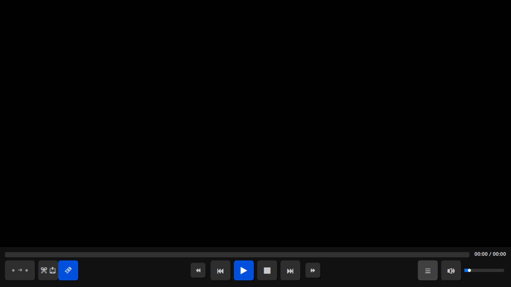
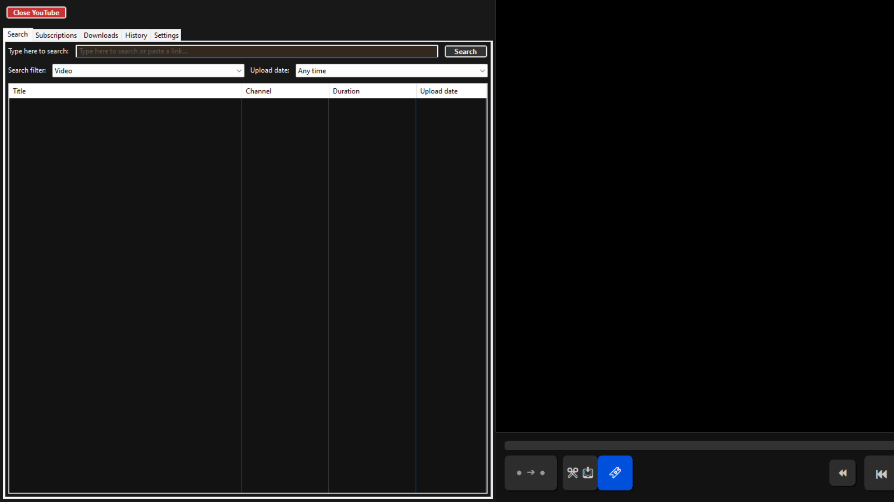
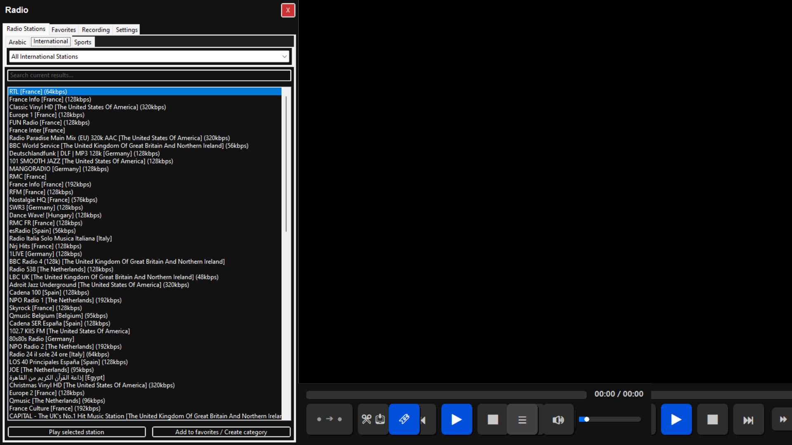

playAbility Pro
مشغل ميديا، استوديو مونتاج، يوتيوب، راديو، وأكثر — في برنامج واحد




مشغل ميديا، استوديو مونتاج، يوتيوب، راديو، وأكثر — في برنامج واحد



عندما بدأت في كتابة السطور الأولى من كود playAbility pro، لم تكن رؤيتي مجرد تصميم مشغل فيديو آخر. كان هدفي بناء بيئة عمل، أو بالأصح استوديو مصغر، يحل مشاكل حقيقية تواجهنا يومياً؛ سواء كنت صانع محتوى يبحث عن أداة مونتاج سريعة، أو مستخدماً عادياً يريد الاستمتاع باليوتيوب والراديو بدون مشتتات، أو مستخدماً من المكفوفين وضعاف البصر يبحث عن برنامج يتحدث لغته ويفهم احتياجاته بنسبة 100%.
بعد شهور من التطوير، أضع بين أيديكم playAbility pro: البرنامج الذي يجمع 10 أدوات احترافية في مكان واحد، وبموارد تكاد لا تُذكر من جهازك.
سهم لأعلى/لأسفل تتحكم بالصوت، ومع Shift + سهم لأعلى ترفع الصوت حتى 400%.Alt + سهم يمين/يسار للتقدم أو الرجوع إطاراً واحداً، واحفظ الإطار كصورة بـ Ctrl + S.Ctrl + سهم يمين للتسريع، Ctrl + سهم يسار للتبطيء، Ctrl + Space للسرعة الطبيعية.Shift + P عند البداية (A) وعند النهاية (B). Escape للإلغاء.Alt + B للإضافة للسلة، Alt + Shift + B لتفريغ السلة.Alt + S لفتح المدير، وراجع المقاطع، وصدّرها منفصلة أو ادمجها في ملف واحد.Ctrl + Shift + أسهم للنقطة A، Alt + Shift + أسهم للنقطة B.Ctrl + Y — ابحث، صفّي النتائج، وتصفح دون إعلانات.Ctrl + Q للإضافة، اختر الجودة (144p حتى 1080p، أو WAV/FLAC/MP3).Alt + Page Down/Up للقفز بين الفصول.Ctrl + H لعرض قائمة الفصول.Ctrl + Shift + C لتقسيم الفيديو إلى ملفات منفصلة بناءً على فصوله.Ctrl + R — تصفح آلاف الإذاعات منظمة في تبويبات.Ctrl + T والوقت الحالي Ctrl + Shift + T.Ctrl + Shift + S.Alt + H لإخفاء القوائم.Ctrl + Alt + S — يبحث عن ترجمة عبر OpenSubtitles ويحمّلها ويشغّلها.Shift + S.Ctrl + M للحفظ باسم، Ctrl + Shift + M للقفز إليها.Ctrl + L — قوائم M3U مخصصة مع إعادة ترتيب.Ctrl + P) غيّر كل الاختصارات.Shift + F — إيكولايزر بـ 9 ترددات، صدى (Reverb)، ومعالجة ديناميكية.Alt + T — بعد انتهاء الوقت يغلق البرنامج نفسه بأمان.playAbility pro ليس مجرد أداة، بل استجابة فعلية لاحتياجاتنا اليومية. إنه يغنيك عن تثبيت برنامج مونتاج للقص، وبرنامج آخر للتحميل من يوتيوب، وتطبيق للراديو، ومشغل ميديا منفصل. كل هذا في بيئة واحدة، خفيفة، وسريعة، وتتحدث لغتك.
هل أنت مستعد لنقل تجربتك في استهلاك وإنتاج الميديا إلى مستوى آخر؟
البرنامج يدعم ميزة التحديث التلقائي داخلياً، لتبقى دائماً على أحدث إصدار!
When I wrote the first lines of playAbility Pro code, my vision was not just another video player. It was a mini-studio solving real daily problems for content creators, casual users, and blind users needing a fully accessible app.
After months of development, I present playAbility Pro: 10 professional tools in one place using minimal system resources.
Up/Down for volume, Shift + Up boosts to 400%.Alt + Left/Right for frame nav, Ctrl + S to save.Ctrl + Right/Left speed up/down, Ctrl + Space normal.Shift + P at A and B. Escape to clear.Alt + B add, Alt + Shift + B clear.Alt + S opens manager, export or merge.Ctrl + Y. Search, filter, no ads.Ctrl + Q, quality 144p-1080p, WAV/FLAC/MP3.Alt + Page Down/Up jump chapters.Ctrl + H show list, Ctrl + Shift + C split into files.Ctrl + R opens radio: thousands of stations.Ctrl + T, current time Ctrl + Shift + T.Ctrl + Shift + S. Clean UI Alt + H.Ctrl + Alt + S searches OpenSubtitles.Shift + S. Extract embedded as SRT.Ctrl + M save bookmark, Ctrl + Shift + M jump.Ctrl + L playlist, custom M3U. Resume from exact second.Ctrl + P to customize shortcuts.Shift + F audio effects: 9-band EQ, Reverb, dynamics.Alt + T sleep timer safely shuts down.playAbility Pro replaces a media player, video editor, YouTube downloader, and radio app in one lightweight accessible package.
Ready to take your media experience to the next level?
Built-in auto-update, always on the latest version!
playAbility Pro combine 10 outils professionnels en une seule application légère et accessible.
Voir version arabe ou anglaise pour la description complète.
playAbility Pro vereint 10 professionelle Werkzeuge in einer leichten, barrierefreien Anwendung.
Vollständige Beschreibung auf Arabisch oder Englisch.
playAbility Pro combina 10 strumenti professionali in un unica applicazione leggera e accessibile.
Vedi versione araba o inglese per la descrizione completa.
playAbility Pro combina 10 herramientas profesionales en una aplicación ligera y accesible.
Versión completa en árabe o inglés.
playAbility Pro 10 profesyonel aracı tek bir hafif ve eri§ilebilir uygulamada birle§tirir.
Tam açıklama için Arapça veya İngilizce sürüme bakın.
البرنامج يدعم التحديث التلقائي — نزّل المثبت مرة واحدة فقط!
للأسئلة والاستفسارات والمقترحات، تواصل معنا عبر: